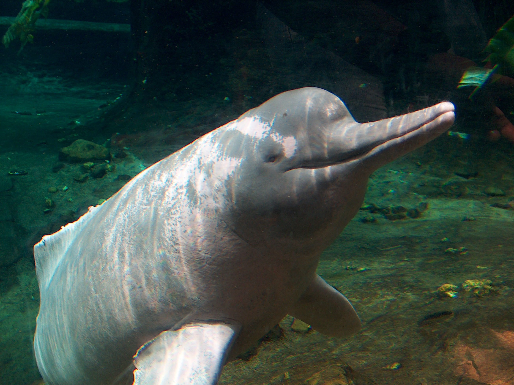
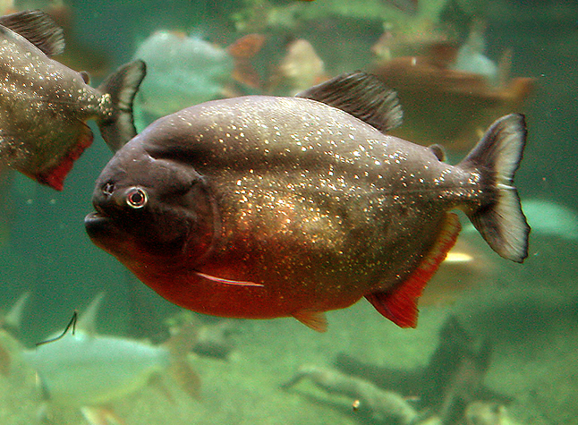
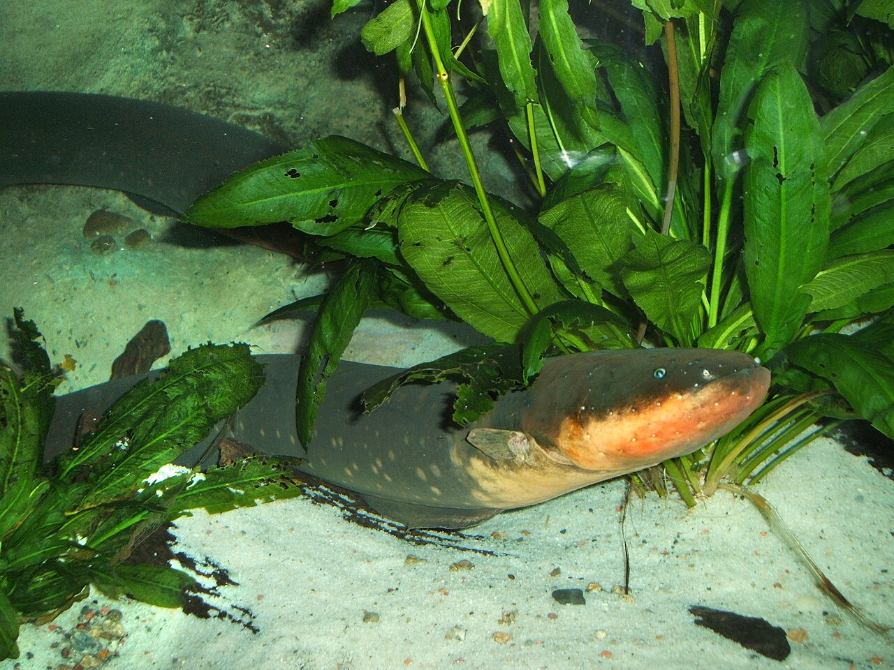

VENEZUELA'S FRESHWATER WILDLIFE
AMAZON RIVER DOLPHIN

The Amazon River Dolphin, also known as the Pink Dolphin or Boto, is one of the most enchanting creatures of Venezuela's Orinoco and Amazon river systems. Young dolphins are born grey and gradually develop a pink coloration as they age — the more active males often being the brightest pink. Unlike oceanic dolphins, they have flexible necks that allow them to maneuver through submerged trees in flooded forests. Deeply embedded in local legend, they are considered sacred by many indigenous communities along the river.
PIRANHA

Piranhas are among the most infamous freshwater fish in the world, and Venezuela's rivers are home to several species. The Red-bellied Piranha is the most well-known, with its vivid orange-red underside and razor-sharp interlocking teeth. The Black Piranha is the largest species and arguably the most aggressive. Though their reputation for ferocity is often exaggerated, piranhas in schools are extraordinarily efficient scavengers that play a crucial role in keeping river ecosystems healthy.
GIANT OTTER

The Giant Otter is the world's largest otter, reaching up to 1.8 meters in length, and one of Venezuela's most charismatic freshwater predators. Highly social and vocal, they live in close-knit family groups that communicate with a wide range of chirps, screams, and hums. Pups are born blind and helpless, raised cooperatively by the entire family group. Known locally as the "river wolf," the giant otter is an apex freshwater predator that hunts fish, caimans, and even anacondas.
ELECTRIC EEL

The Electric Eel is one of the most extraordinary animals on Earth, capable of generating electric discharges of up to 860 volts — enough to stun a horse. Despite its name, it is not a true eel but a knifefish, breathing air and surfacing every few minutes. Found throughout Venezuela's murky river systems, juveniles begin producing small electric pulses from birth, developing their full power as they mature. Adults use electricity not only to hunt and defend themselves but also to communicate and navigate in dark, sediment-filled waters.